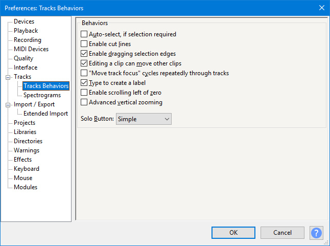

Tracks Behaviors Preferences
- Accessed by: (on a Mac )
- 
- Tracks Behaviors Preferences.
Behaviors
- Auto-select, if selection required: If you select no audio before applying an effect, the effect will be automatically applied to all audio in all tracks. This also applies to other menu items requiring an audio selection to be made.
If you have a Time selection, made by using the Selection Toolbar, but with no audio tracks selected, then the Auto-select will operate on just that time range in all audio tracks.
- Enable cut lines: Displays a light blue vertical line at the left edge of a cut edit, which changes to red after clicking elsewhere in the track. Click on the line at any time to restore the cut audio; if you restore in error, use to get the cut line back. To remove the line without restoring audio, right-click over it. will restore the line if you make a mistake.
- Enable dragging selection edges: Lets you expand or contract existing selection regions with the mouse after they have been created. If unchecked you must use the Selection Bar or keyboard to modify existing selection regions. See Audacity Selection for further details.
- Editing a clip can move other clips: If the track has been split into more than one clip, any clips following to right of the edit point can always move as necessary in response to pasting, cutting, deleting or other change that adds or removes content.
Unchecking "Editing a clip can move..." pins clips so that they cannot move in response to an edit in another clip. When removing content, any following clips will not be allowed to move back. When pasting, an error message will display if there is not enough room to paste without moving the following clips.
- "Move track focus" cycles repeatedly through tracks: When using the up and down arrow keys to change which track is focused, moving the focus off one end (top or bottom) makes the focus jump to the other end.
- Type to create a label: When enabled (default), if there is already a label track that has the yellow focus border, you do not need to use "Add Label at Selection" or its Ctrl + B shortcut to create a new label. Just type your required label text to create a new label at the position of the editing cursor or selection region. If the label track does not have focus, use the Up or Down arrow keys on your keyboard to move focus into the label track.
When this preference is disabled, typing never creates a label in the focused label track. This lets you use shortcuts (for example, transport shortcuts to play audio related to the editing cursor or selection) without accidentally creating an unwanted label. When you want to create a new label, use "Add Label at Selection" or Ctrl + B or "Add Label at Playback Position" Ctrl + M.
- audio is playing, recording or paused, and the cursor or selection is at the same position in waveform and label track
- there is already a label at the exact same position in the label track.
- Enable scrolling left of zero: Enables you to scroll to the left of time zero on the Timeline. The default setting is "off". This can be make Scrubbing from the start or end of the track easier when using pinned playhead.
- Advanced vertical zooming: When enabled, you can use left-click gestures in the Vertical Scale to make vertical zooms in audio tracks and note tracks. Default is "off", with such left-clicking disabled.
- Solo Button: The button on the Track Control Panels can behave in three different ways:
- In "Simple" mode (default), "Solo" means as it does in common parlance - a track made solo is the only one that can be heard. If a track is solo, the mute buttons are set down on all the other tracks, so that solo is just a shortcut way of muting all tracks except one. If on any occasion you want the Solo button to select multiple tracks for listening, hold down Shift when clicking Solo.
- "Multi-track" will suit those used to mixing desks and other professional audio software. Any number of tracks can be made solo so that they mix together, but if any solo button is down, the mute buttons have no effect. If on any occasion you want the Solo button to play only one track at a time (so that clicking it releases any other solo buttons), hold down Shift when clicking .
- "None" mode has no solo buttons, so you select the tracks you want to play by un-muting them (clicking the mute buttons so that they are up).